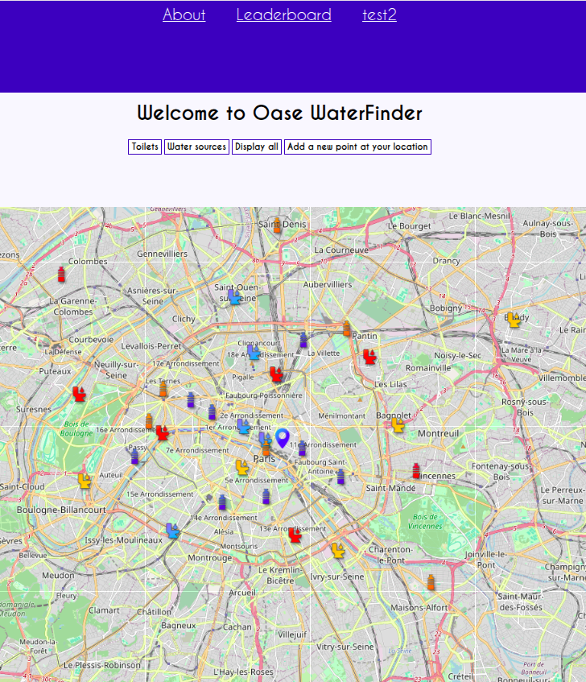
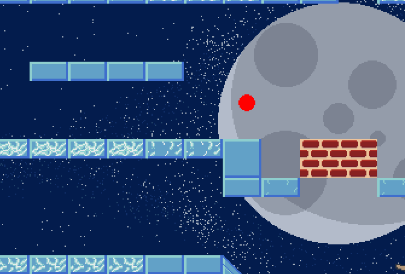

My resume
Jalil Bellahcen
Welcome Guest, you are currently at home. Feel free to visit!
About me
My projects
Education
Efrei - Villejuif, France
2024 – 2029
Master of Science in Computer Science & Engineering
Bezout High School - Nemours, France
2021 – 2024
High School Diploma (General Baccalaureate) — Specializing in Mathematics & Physics
Graduated with Highest Honors (Mention Très Bien)
Work Experience
Bonobo — Sales Assistant | Nemours, France
January 2026 – February 2026
- Welcomed, advised, and assisted customers in store.
- Managed inventory, stock replenishment, and checkout operations.
Trèves — Procurement Intern | Reims, France
July 2025 – August 2025
- Discovered corporate Purchasing & Logistics operations in an international group.
- Collaborated with cross-functional teams and communicated with external suppliers.
Skills
Technical Skills
Languages
Home
Featured Projects
Oase WaterFinder (still in progress)
A web application designed to locate nearby public toilets and water points, featuring real-time community contributions. Built with React and MySQL.
- Integrated geolocation and tag-based search filtering
- Implemented a user contribution system with a dynamic leaderboard

Statistical Data Analysis — Student Performance
End-to-end statistical study investigating the correlation between student lifestyle habits and academic results.
- Data collection, survey designing & preprocessing (handling missing values, cleaning)
- Hypothesis formulation and statistical testing
- Data visualization and insights generation using Pandas & Seaborn
C Image Processing Software
A desktop application developed in pure C capable of reading, processing, and exporting BMP8 and BMP24 images.
- Implemented custom image algorithms (Gaussian blur, negative filter, color adjustments)
- Optimized memory management and dynamic file parsing
2D Physics Golf Game
A side-scrolling golf game built in Python using Pygame, incorporating power-ups and customized physics.
- Designed custom tilemap terrain rendering
- Implemented collision detection algorithms using the SAT (Separating Axis Theorem) circle-polygon variant

Competitions & Challenges
Prologin — National Programming Contest
Participated in the qualification phase of the French National Student Programming Contest.
- Solved complex algorithmic and logic challenges under strict time constraints
- Implemented clean and optimized algorithms in Python and C
Home
A bit about me
I am a Computer Science & Engineering student at Efrei Paris, where I strive to always learn different things, or just get better at what I do.
Currently seeking a 5 months internship in Data Science & Machine Learning starting November 2027
My interests
- Tech in general, but mostly Linux and Machine Learning
- Applied mathematics in Computer Science and recreational math
- Reading
Contact me
My email : jalil.bellahcen@gmail.com
Home